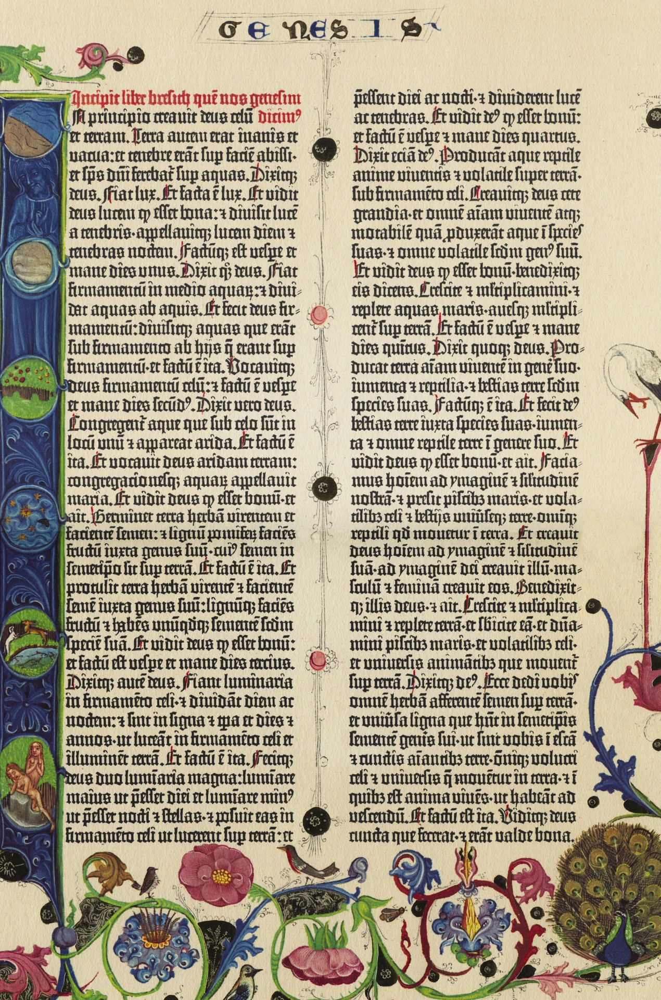
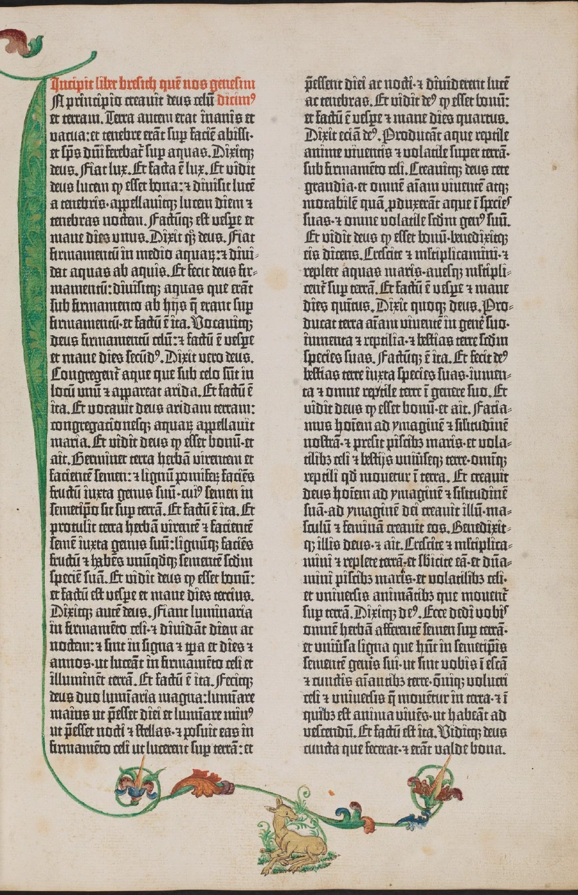

아직 펼치지 않은 카드
아직 펼치지 않은 카드
모두의 말로 찍은 성경 · 2구텐베르크 성경 창세기 첫 쪽같은 인쇄소에서 찍은 구텐베르크 성경인데도 책마다 생김새가 달라요. 왜 그럴까요?찍은 글자 옆에 꽃이랑 공작새가 그려져 있어!
1455년 무렵 · 오늘마인츠에서 찍은 쪽 → 베를린 · 슈투트가르트
구텐베르크 성경 창세기 첫 쪽
구텐베르크 성경의 글자는 인쇄소에서 똑같이 찍었지만, 꽃과 새는 책마다 다른 손이 그렸어요. 베를린에 있는 책과 슈투트가르트에 있는 책의 창세기 첫 쪽을 겹쳐 놓고, 손잡이를 밀어 비교해 봐요.
글자는 도장처럼 똑같이 찍었는데, 그림은 사람마다 달리 그렸대. 두 책을 겹쳐서 무엇이 다른지 찾아볼까?
검수 전 시안이에요(기준서 1판). 꾸밈에 대한 설명은 도서관 자료를 따랐고, 그림 속 모습은 사진을 열어 본 대로 적었어요. 두 쪽을 겹쳐 보려고 이 안내서가 두 사진을 글자 칸에 맞춰 잘랐어요. 상상은 ‘눈 감고 상상해 보기’에만 썼어요.
시안 확인용카드 단계 미리 보기
1
찍은 글자, 손으로 핀 꽃
베를린 국립도서관에 있는 구텐베르크 성경의 창세기 첫 쪽이에요. 검은 글자 두 단은 마인츠의 인쇄소에서 찍었어요. 인쇄소는 붉은 제목과 머리글자가 들어갈 자리를 비워 두었어요.
그 빈자리와 여백은 책이 인쇄소를 떠난 뒤 사람의 손이 채웠어요. 맨 위의 GENESIS는 쪽 머리의 제목이고, 붉은 글씨 한 줄은 책의 시작을 알리는 제목(루브릭)이에요. 왼쪽의 긴 I 안에는 창세기 1장의 장면들을 작은 동그라미에 차례로 그렸어요. 아래 여백에는 꽃과 덩굴 사이로 새들과 공작이 있어요.
모건 도서관에 따르면 구텐베르크 성경 한 질에는 붉은 제목 3,945개와 크고 작은 머리글자 3,948개가 들어갈 자리가 있어요. 그 자리를 얼마나, 어떻게 채울지는 책마다 달랐어요.
글자는 도장처럼 찍고, 꽃이랑 공작은 사람이 붓으로 그렸대.
물어보기그림 속에서 새를 몇 마리 찾을 수 있어?
2
두 권을 겹쳐 보면
이번에는 슈투트가르트의 뷔르템베르크 주립 도서관에 있는 구텐베르크 성경의 같은 쪽이에요. 1978년 미국 뉴욕의 제너럴 신학교에서 사들인 책이에요.
두 쪽을 겹쳐 놓고 가운데 손잡이를 밀어 보세요. 검은 글자 줄은 거의 그대로 이어지는데, 머리글자와 여백은 전혀 달라요. 한 권에는 푸른 I와 공작이, 다른 권에는 초록 잎무늬 I와 엎드린 사슴 한 마리가 있어요.
가운데 손잡이를 밀어 두 권의 같은 쪽을 겹쳐 보세요.


왼쪽 · 슈투트가르트 본 — 이 안내서가 글자 칸에 맞춰 잘랐어요 · 자료: 구텐베르크 성경 창세기 첫 쪽(뷔르템베르크 주립 도서관 본) · 퍼블릭 도메인 · 위키미디어 공용
오른쪽 · 베를린 본 — 이 안내서가 글자 칸에 맞춰 잘랐어요 · 자료: 구텐베르크 성경 창세기 첫 쪽(베를린 국립도서관 본) · 스캔: Jossi · 퍼블릭 도메인 · 위키미디어 공용
두 사진은 찍은 방법과 크기가 달라서, 이 안내서가 글자 칸에 맞춰 잘랐어요. 그래서 줄이 조금 어긋나 보일 수 있어요. 글자는 같은 활자로 찍었고, 꽃과 짐승은 저마다 다른 손이 그렸어요.
꾸미는 손은 책마다 달랐어요. 모건 도서관이 가진 세 권만 봐도, 한 권은 마인츠 근처의 독일 장인과 뒷날 브뤼헤 근처의 장인이 나눠 그렸고, 다른 한 권은 펜으로 그린 머리글자와 붉고 푸른 글씨가 거의 전부예요. 프린스턴 대학의 한 권은 에르푸르트에서 꾸미고 묶었어요.
같은 글자인데, 한 권엔 공작이, 다른 권엔 사슴이 있어!
물어보기두 쪽에서 똑같은 것과 다른 것을 하나씩 찾아볼까?
눈 감고 상상해 보기
창가 작업대에 인쇄소에서 온 낱장이 놓여 있어요. 장식 장인이 붓 끝에 푸른 물감을 찍어 긴 I자를 칠해요. 물감이 마르기를 기다리는 동안, 여백 한 귀퉁이에 공작의 꼬리가 하나씩 피어나요.
눈을 감아 봐. 붓이 사각사각. 하얀 여백에 공작 꼬리가 하나씩 피어나.
나의 자리
다시 보면, 이 동그라미 그림과 공작은 이 한 권에만 그려졌어요.
두 쪽을 겹쳐 보았을 때, 어느 쪽 손길에 더 오래 눈이 머물렀나요? 그 까닭은 무엇일까요?
공작이 있는 쪽과 사슴이 있는 쪽, 어느 쪽이 더 좋아? 왜?
마음에 닿는 한 줄을 고르거나 직접 써 보세요. 한 줄을 남기면 이 자리의 도장이 찍혀요. 이 기기에만 저장돼요.
더 깊이
궁금한 칸만 펼쳐 읽어도 괜찮아요.
알고 보면
3,945개와 3,948개 모건 도서관에 따르면 한 질에는 붉은 제목 3,945개, 그리고 여섯 줄 높이 72개부터 한 줄 높이 2,509개까지 머리글자 3,948개가 들어갈 자리가 있어요. 인쇄소가 이 자리를 남겨 두었어요.
책마다 다른 손 모건 도서관의 양피지 책은 여러 장인이 나눠 그렸어요. 마인츠 근처의 독일 장인이 여덟 줄 높이의 큰 P를 그렸고, 뒷날 브뤼헤 근처의 장인이 다른 꾸밈을 더했어요. 같은 도서관의 두 권짜리 종이 책은 펜으로 그린 머리글자와 붉고 푸른 글씨가 주로예요.
푸스트의 장인 푸스트가 펴낸 책들을 꾸민 것으로 보이는 장인이 있어요. 모건 도서관은 이 장인이 같은 물감과 정해진 무늬를 여러 책에 되풀이했고, 어쩌면 본뜨는 판(스텐실)까지 썼을 거라고 봐요. 손으로 그리면서도 찍어 내듯 같은 꼴을 되풀이한 거예요.
베를린 본을 찾은 사서 베를린 선제후 도서관의 사서였던 크리스토프 헨드라이히(1630~1702)가 도서관에서 양피지에 찍은 두 권짜리 라틴어 성경을 찾아냈어요. 1760년 카를 콘라트 욀리히가 그 일부를 본떠 펴내자, 학자들은 그것으로 같은 판의 다른 책들을 알아보았어요.
기록마다 다른 점
이디온 영인본이 나온 해 앞면 카드는 독일 뮌헨 이디온 출판사의 영인본을 1977~78년에 나왔다고 적었어요. 영인본 안내 사이트 팩시밀리 파인더는 베를린 본을 바탕으로 한 이 영인본을 1979년으로 적어요.
직접 가 보기
확인한 날 · 2026년 11월 18일 · 바뀌기 쉬운 정보라 정기적으로 다시 확인해요
베를린 국립도서관 운터 덴 린덴 건물(운터 덴 린덴 8)의 박물관 ‘슈타비 쿨투어베르크’에서는 베를린 본 구텐베르크 성경을 ‘살아 있는 책’이라는 멀티미디어 화면으로 넘겨 볼 수 있어요. 빛에 약한 전시물이 많아 석 달쯤마다 바뀐다고 해요. 관람 시간은 가기 전에 확인하세요.
두 권 겹쳐 보기 금박
두 권의 같은 쪽을 손잡이로 양쪽 끝까지 겹쳐 보면 카드에 금박이 입혀져요.
손잡이를 양쪽 끝까지 밀어 두 권 겹쳐 보기
아이와 함께 채색
아이와 함께 ‘영화처럼 보기’를 끝까지 보면 카드가 채색돼요.
아이와 함께 ‘영화처럼 보기’를 끝까지 보기
근거 보기 (7)
- 모건 도서관 「Ornamentation」 — 인쇄소가 붉은 제목과 머리글자 자리를 남김, 붉은 제목 3,945개와 크기별 머리글자 수(72·3·61·11·1,292·2,509), 세 권의 서로 다른 꾸밈(마인츠 근처의 독일 장인과 브뤼헤 근처의 장인, 종이 책의 펜 머리글자), 푸스트의 장인과 정해진 무늬·스텐실
- 모건 도서관 「The Invention of Printing」 — 붉은 제목(루브릭)은 성경 각 부분의 시작과 끝을 알리는 붉은 글, 찍으려다 그만둠
- 유로피아나 블로그 「Europe’s First Printed Book」 — 헨드라이히(1630~1702)가 베를린 선제후 도서관에서 찾은 양피지 두 권, 1760년 욀리히의 본뜬 판, 지금도 베를린 국립도서관에, 책을 산 곳의 뜻대로 꾸밈
- 폴 니덤·에릭 화이트(프린스턴 2019 전시 · 옥스퍼드 Cabinet) — 셰이데 본은 에르푸르트에서 꾸미고 묶음
- 위키미디어 공용: 베를린 본 창세기 첫 쪽(1권 5장 앞면, 베를린 국립도서관의 꾸민 본), 슈투트가르트 본 창세기 첫 쪽(1978년 뉴욕 제너럴 신학교에서 사들임) 사진 정보
- 방문 베를린(visitBerlin): 슈타비 쿨투어베르크 — 운터 덴 린덴 8, 300점쯤의 전시, 베를린 본을 넘겨 보는 멀티미디어 ‘살아 있는 책’, 석 달쯤마다 바뀜(2026년 11월 18일 확인)
- 팩시밀리 파인더: 베를린 국립도서관 2° Inc 1511 — 이디온 출판사 영인본(뮌헨, 1979) 등
그림·사진·소리 출처
‘처음 만나는 기독교 문화’의 깊은 카드예요. 카드 단계와 남긴 글은 이 기기에만 저장돼요.